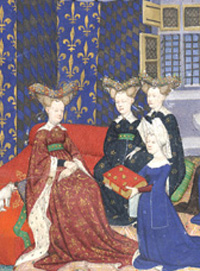

 Christine de Pizan (1365-ca1431) was the first woman in Europe to earn her living as writer and publisher. Fifty of the extant manuscripts of her works were produced by her scriptorium in Paris between 1399 and 1418, for presentation to patrons. All these manuscripts were copied by one or more of three scribes - P, R and X. Scribe X has been identified with Christine herself. (Please see Presentation Copies for a list of the presentation copies which have been identified so far.)
British Library, Harley MS 4431, commissioned by Queen Isabel of France about 1413, is the most important surviving presentation copy. Prepared in nine sections, it comprises 398 folios ruled in double columns, and contains thirty works: lyric poetry; narrative, moralising and devotional verse; prose works on education and on illustrious women.
To ensure a collection fit for the Queen, Christine engaged artists of the highest quality. The decoration is lavish; the miniatures, the majority by the Master of the Cité des Dames, are complemented by numerous decorated initials, borders, rubrics and paragraph marks. Emphasis is given to the Epistre Othéa, illustrated by 101 of the 132 miniatures in the manuscript. For very many of Christine's works Harley MS 4431 represents her last word, no later copies being known. In artistic and literary terms, therefore, the Queen's MS marks the culmination of Christine's career as author and publisher.
The contents of the manuscript are as follows:
SECTION 0 (4 FOLIOS, numbered 0, 1-3)
0. 2c-d, Table des Dictiez en general
1. 3a-d, Prologue Adreçant à la Royne
SECTION 1 (91 FOLIOS)
2. 4a-21b, Cent Balades: 100 poems
3. 21b-24b, Virelays: 16 poems
4. 24b-25a, Balades de Plusieurs Façons: 4 poems
5. 25b-27a, Une assemblée de plusieurs rimes auques toutes léonimes en façon de Lay
(Lay de Vers Léonimes)
6. 27a-28d, Ung Aultre Lay
7. 28d-34b, Rondelz: 67 poems
8. 34c-37c, Gieux à vendre: 71 poems
9. 37c-48a, Plusieurs Balades de Divers Propos (Aultres Balades): 50 ballades and 1 rondeau
10. 48b-49c, Une Complainte Amoureuse
11. 49c-51a, Encore Aultres Balades: 5 ballades and 4 rondeaux
12. 51b-56c, L'Epistre au Dieu d'Amours
13. 56d-58b, Une Autre Complainte Amoureuse
14. 58c-71b, Le Livre du Debat des .ii. Amans
15. 71c-81a, Le Livre des .iii. Jugemens
16. 81b-94a, Le Livre de Poissy
SECTION 2 (47 FOLIOS)
17. 95a-141c, L'Epistre Othéa
SECTION 3 (35 FOLIOS)
18. 143b-177d, Le Livre du Duc des Vrays Amans
SECTION 4 (42 FOLIOS)
19. 178a-219c, Le Livre du Chemin de Lonc Estude
SECTION 5 (16 FOLIOS)
20. 221a-236c, Le Livre de la Pastoure
SECTION 6 (53 FOLIOS)
21. 237a-254a, Le Livre des Epistres du Debat sus le 'Rommant de la Rose'
22. 255d-257a, Une Epistre à Eustace Morel (Eustache Deschamps)
23. 257b-259b, Une Oroison de la Vie et Passion de Nostre Seigneur
24. 259c-261c, Proverbes Moraulx
25. 261c-265b, Les Enseignemens (Moraux) que Cristine donne à son Filz
26. 265b-266d, Une Oroison de Nostre Dame
27. 267a-c, Les .XV. Joyes Nostre
Dame Rimées
28. 268a-287c, Le Livre de Prudence
288c-289b, Table des Rubriches du 'Livre de la Cité des Dames'
SECTION 7 (87 FOLIOS)
29. 290a-374a, Le Livre de la Cité des DamesSECTION 8 (23 FOLIOS)
30. 376a-396b, Cent Balades d'Amant et de Dame
396b-398b, Lay de Dame (Lay Mortel)